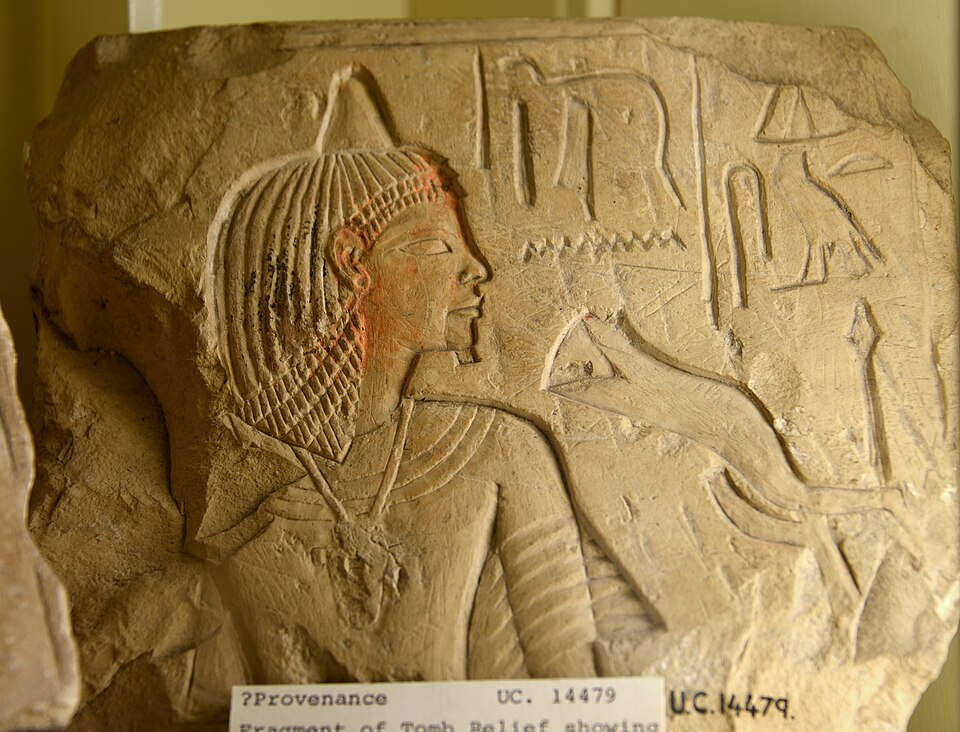

Зачем открывают уста
Смерть для египтянина — лишение: мёртвый не может говорить, есть, пить и видеть. Обряд «открытия уст» (в древних текстах — «отверзания уст») возвращал мумии чувства. Жрец касался уст теслом и произносил формулу: «Я укрепляю тебе твои разделенные челюсти» (Тексты пирамид, заклинание 30a) — и умерший мог говорить и принимать пищу в загробном мире. Обряд совершали у самого гроба — последний ритуал погребения: от мумификации и процессии до жеста у саркофага.
Инструменты и жрецы
Орудия обряда: секира нетжеру, кремень песеш-кеф — ими жрец «открывал» уста, глаза и уши. Действовали двое: жрец сем — «тот, кто совершает открытие уст», — касался тела, а чтец херип-хепеш зачитывал формулы. Важно: обряд совершали не только над мумией, но и над статуей. Культом статуи заведовали ещё при жизни владельца: «открытая» статуя принимала ка — двойника умершего — и подношения на алтаре, ежедневно и вечно.
Гор открывает уста Осирису
Мифический прообраз — Осирис: после гибели и расчленения от Сета он воскрес, и первым, кто совершил «открытие уст» над отцом, был Гор. Это один из древнейших ритуалов: формулы открытия уст есть уже в Текстах пирамид, обращённых к царю; со временем обряд перестал быть чисто царским.
Сцена в гробнице Тутанхамона
Изображение обряда сохранилось на стене погребальной камеры гробницы Тутанхамона (KV62): перед саркофагом стоит женщина в шакальей маске Анубиса и совершает над мумией «открытие уст». Её читают как царицу Инай, жену вельможи Эйе — преемника юного царя, отвечавшего за похороны. Жрица на месте, где ритуал требует жреца: к Новому царству обряд, как и Книга мёртвых, стал доступен не только фараону.
Порог вечности
После обряда гробница становилась настоящим домом: ка «вступал» в тело и статую, а подношения переставали быть жестом — они становились едой. К гробнице прикреплялось хозяйство культа, обеспечивавшее вечные жертвы. «Открытие уст» — порог: до него мёртвый лежит, после — живёт, говорит и ест, житель полей Иалу. Маленькое воскресение — репетиция большого после суда.